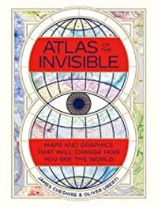
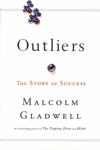

hi, ali here.
Ali Bahrami · Data engineer
I crunch your data and tell you a good story about it.
about
- Vancouver, BC
- Economics and Finance, New York University
- Data Engineer @ Beatport
I design lakehouses and warehouses, build batch and streaming pipelines, and turn raw data into answers. My love of architecture started with Lego, Stronghold Crusader, and chess. Now I build with data.
I started school in a refugee camp in Pakistan. A scholarship took me to an international school in Bangkok, where I sat in my first English class, then to NYU Abu Dhabi and NYU Stern. I chose Vancouver to settle down.
When I am not cleaning data, I am exploring the Pacific Northwest mountains, playing chess, hoarding maps, or reading colonial and post-colonial literature.
experience
Data Engineer @ Beatport
May 2026 to now · Remote, Vancouver, BC
- Own the royalties pipelines on GCP: Airflow, BigQuery, dbt.
- Reconcile royalties across source systems and partner statements.
- Migrate legacy ETL onto Airflow and dbt.
Data Engineer @ Canfor
Jan 2025 to May 2026
- Migrated the data platform from Oracle to Microsoft Fabric.
- Wrote the Fabric governance: naming, code patterns, access, version control.
- Built and maintained the executive KPI dashboards.
Data Analyst @ Canfor
Feb 2023 to Jan 2025
- ETL pipelines on Azure Synapse and Delta Lake.
- Power BI dashboards for finance, safety, and marketing.
Data Analyst, Telecommunications @ Ledcor
Feb 2022 to Feb 2023
- Pipelines and KPI dashboards in Python, SQL, and Power BI.
- Reconciled costs and revenue to close an invoicing gap.
Economics and Finance @ New York University
2016 to 2021
projects
Sales lead scoring
Which leads turn into customers, from open sales data.
Duplicate questions
NLP to find duplicate questions in Quora's dataset.
Flight delays
Supervised learning to predict how late a flight will be.
Loan approvals
Predicting approval from applicant data.
Banking behavior
Segmenting a bank's customers by demographics and habits.
Football, 1872 to today
Exploring a century and a half of international matches.
Data wrangling with APIs
Yelp and Google APIs.
maps

Salish Sea
Shaded relief print, 18 × 24 in.
SRTM v4.1 (CGIAR-CSI), GSHHG, Natural Earth.

Jaghori, Afghanistan
Shaded relief print, 18 × 24 in, English and Persian labels.
OCHA COD-AB, SRTM v4.1, OpenStreetMap.
reading
Books that shaped how I work and see the world. Links go to Amazon.
maps
-

Atlas of the Invisible
James Cheshire, Oliver Uberti
Maps and graphics that make hidden patterns visible, from migration to pollution.
Amazon ↗
-
Atlas of Finance
Dariusz Wojcik, James Cheshire
The geography of money: where finance lives and how it moves around the world.
Amazon ↗
-
Prisoners of Geography
Tim Marshall
Ten maps that show how mountains, rivers, and seas still steer world politics.
Amazon ↗
work
-
Never Split the Difference
Chris Voss, Tahl Raz
Negotiation, taught by a former FBI hostage negotiator.
Amazon ↗
-
The Intelligent Investor
Benjamin Graham
Value investing from the man who taught Warren Buffett: margin of safety over market mood.
Amazon ↗
-
The 48 Laws of Power
Robert Greene
Three thousand years of history, boiled down to how power works.
Amazon ↗
-

Outliers
Malcolm Gladwell
Why success owes as much to timing, culture, and practice as to talent.
Amazon ↗
-
Start with Why
Simon Sinek
Why the people and companies that lead with purpose are the ones others follow.
Amazon ↗
-
The Defining Decade
Meg Jay
Why your twenties matter, from a psychologist who works with twentysomethings.
Amazon ↗
data
science
-
The Botany of Desire
Michael Pollan
Four plants, the apple, tulip, cannabis, and potato, and how they shaped human desire as much as we shaped them.
Amazon ↗
-
The Emperor of All Maladies
Siddhartha Mukherjee
A biography of cancer, from ancient Egypt to modern labs.
Amazon ↗
-
Everything Is Tuberculosis
John Green
The history of humanity's deadliest infection, and why it is still with us.
Amazon ↗
history
-
The Age of Wonder
Richard Holmes
How the Romantic generation of explorers and scientists, from Joseph Banks to Humphry Davy, found the beauty and terror of science.
Amazon ↗
-
Inglorious Empire
Shashi Tharoor
What British rule actually did to India, from its economy to its railways.
Amazon ↗
-
Bury My Heart at Wounded Knee
Dee Brown
The conquest of the American West, told from the side of the Native nations.
Amazon ↗
-
A People's History of the United States
Howard Zinn
American history from the bottom up: workers, enslaved people, Native nations, and immigrants.
Amazon ↗
-
Sapiens
Yuval Noah Harari
How one species of ape came to run the planet.
Amazon ↗
stories
-
The Kite Runner
Khaled Hosseini
Two boys in Kabul, one Pashtun and one Hazara, and a betrayal that lasts decades.
Amazon ↗
-
A Thousand Splendid Suns
Khaled Hosseini
Two women in Afghanistan, bound together through three decades of war.
Amazon ↗
-
What's Your Story?
Brandon Doman
True experiences from complete strangers, gathered by The Strangers Project in New York.
Amazon ↗
ali's jam
Currently in the mix.